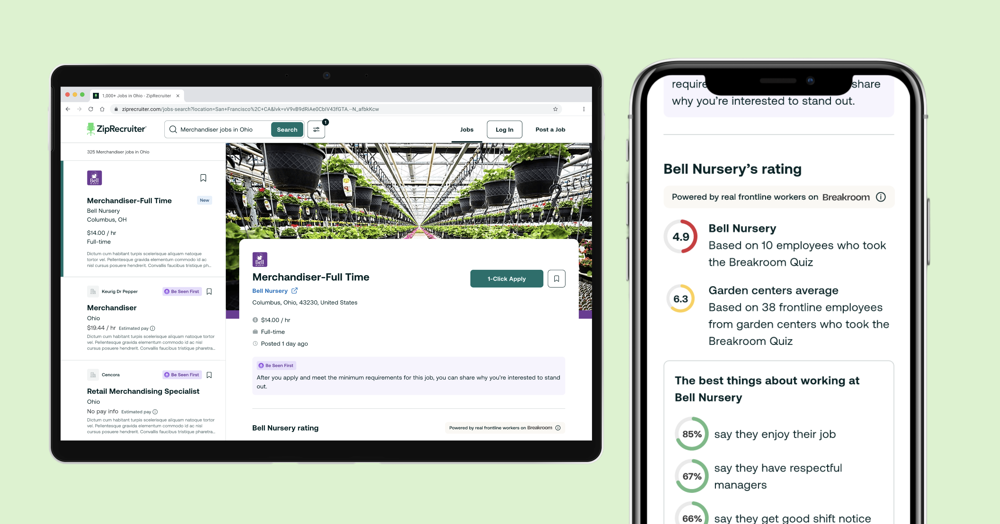

Advocating for trust, data integrity, and frontline workers on someone else's product — after an acquisition. I worked alongside a Ziprecruiter designer as the Breakroom voice in the room — initially in a co-design capacity, later shifting into a support and feedback role. Launched.
The challenge
After Breakroom's acquisition, I was brought in to help shape how Breakroom's employer ratings and workplace data would be woven into Ziprecruiter job listings — giving job seekers richer context at the point of decision. In practice, this meant working alongside a Ziprecruiter designer, providing feedback on their designs and at times jumping into Figma to sketch out alternatives.
On paper it was a clear brief. In practice, having two designers working on the same surface with no clear ownership created friction early on. We were both producing designs with equal standing, which led to a lot of back and forth. When the project was shelved and later revived, we made a conscious decision to resolve this: the Ziprecruiter designer would lead on execution, while I moved into a support and feedback role — representing Breakroom's brand, data principles, and user needs.
Three main points of tension
| Who is this for? |
|---|
| Ziprecruiter covered all jobs. Breakroom was built around frontline workers — a specific audience with specific needs that the partner team didn't fully understand. |
| How do we show data? |
|---|
| They wanted rating dials with no context. I knew that showing a rating without the response count behind it was misleading — and would undermine the trust Breakroom's credibility depends on. |
| How bold should we be? |
|---|
| They wanted something simple and safe. I was pushing for something disruptive — a large employer banner, a strong visual identity — because I believed that's what would make employers pay. |
The data integrity argument
The sticking point I felt most strongly about was how Breakroom ratings were displayed. The partner team's instinct was to show a clean rating dial — visually simple, easy to integrate. My position was that this would be actively misleading.
Breakroom's ratings are derived from real quiz responses from real workers. The number of responses behind a rating is part of what makes it credible — a 7.2 from 340 responses means something very different to a 7.2 from 8. Stripping that context out doesn't just weaken the rating, it makes it look like exactly the kind of unverified opinion score that Breakroom was designed to be an alternative to.
I'd written this up in a set of design guidelines specifically for this project:
"Anywhere that we show a rating or an opinion about how good a job is, we must back this up with evidence."
"The Breakroom Rating is an objective mark of the quality of a job or an employer, and not subjective like most ratings that people often experience in other products or websites. We deliberately didn't choose a 1–5 star rating, because they're associated with opinion-led data (e.g. Trustpilot, Uber, Glassdoor). We know there's a high degree of skepticism around those as they're associated with manipulation."
"We are opinionated on what good work is, which means giving our honest and authentic advice to workers who may not even realise what they deserve in the workplace. Many people on the frontline are young and inexperienced, many come from marginalised groups that are more likely to be treated unfairly. Our users need a trustworthy source of information to help them figure out what a good job really is."
In hindsight, handing over a document and assuming it would be read was naive — especially in a cross-company context where the other team had their own priorities, their own design language, and no particular reason to go looking for ours.
The commercial argument
The push for a simpler design wasn't just an aesthetic preference — the partner team genuinely believed that cleaner and more minimal would be easier to sell to employers. My view was the opposite.
Employers paying for a presence on a jobs board need to feel the product is worth the investment. A flat, minimal listing gives them nothing to differentiate themselves with. The large banner image I was advocating for was specifically designed to give employers real estate to express their brand — something Indeed and Glassdoor, with their rigid templates, don't offer. That's a selling point, not a stylistic preference.
The design wasn't boundary-pushing for its own sake. It was a deliberate argument that the jobs board market was underserving employers, and that Breakroom could win there by giving them something to be proud of.
How it played out
The project took time to find its footing. There were periods of misalignment, a point where the work was shelved entirely, and a sustained effort to find common ground with a team that was understandably protective of their product.
The shift came on two fronts. Clarifying roles gave the project structure it had been missing — with the Ziprecruiter designer leading and me in a focused feedback role, we stopped pulling in different directions. And when a new Ziprecruiter PM joined who had more context on what Breakroom was and why the data integrity principles mattered, the conversations became much more productive. The design that launched included the large banner image and contextualised response counts — both things I'd been advocating for.
The pages launched. Early feedback from employer sales conversations was positive — employers responded well to the branded profiles, which validated the commercial argument behind the design direction.
What I'd do differently
Two things, really. The first is to clarify roles and ownership at the very start. A lot of the early friction came from two designers working on the same surface without a clear structure — that's something a short conversation upfront could have resolved. The second is to find your internal ally earlier. The project changed meaningfully when the right PM came on board, and I should have been more proactive about identifying who needed to understand Breakroom's principles and getting them in the room sooner.
With hindsight I really empathised with the feeling that Breakroom were essentially coming into Ziprecruiter's house and telling them how to decorate it. You're asking a team to accept constraints on their own product in service of a brand they're still getting to know. I think the thing I'd do differently is spend more time early on making the Breakroom user real to them — not abstract principles, but actual stories from actual frontline workers about why trust in ratings matters. That's harder to dismiss than a guidelines document.